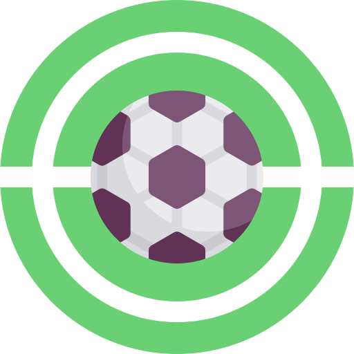

Soccer Spotlight
Ligas de Futbol
Ligas de Futbol - Europa

Liga Premier
La Premier League, es la máxima categoría del sistema de ligas de fútbol de Inglaterra. Comenzó a
disputarse en la temporada 1992-93. En ella pueden también participar, por motivos históricos,
aquellos clubes galeses que lo deseen, siempre que hayan competido ininterrumpidamente en el sistema
de fútbol federado inglés desde, al menos, el 30 de junio de 1992.
Establecida la Primera División de Inglaterra denominada como The Football League en 1888 bajo
amparo de The Football Association, se convirtió en la primera liga de fútbol en el mundo. Se
fusionó en 1892 con la Football Alliance para conformar el primer sistema de divisiones, y pasándose
a denominar la principal categoría como Football League First Division. Dicho sistema fue
ampliándose hasta que se produjo una escisión en la competición pasando a ser la Football League que
actualmente conforma tres divisiones.
El actual formato fue establecido tras un acuerdo el 20 de febrero de 1992 Es por tanto una
competición de carácter privado o sociedad en la que los veinte clubes miembros actúan como
accionistas a través de una persona delegada por cada representante, quienes rigen dicho comité
junto con Dave Richards, director del mismo, y Richard Scudamore, su director ejecutivo.


La Liga
La Primera División de España o LaLiga nombre oficial es Campeonato Nacional de Liga de Primera
División es la máxima categoría del sistema de ligas de fútbol de España y la principal competición
a nivel de clubes del país. La organiza desde 1984 la Liga Nacional de Fútbol Profesional tras
suceder a la Real Federación Española de Fútbol (RFEF). Se disputa desde la temporada 1928-29 y tan
solo se vio interrumpida en dos ocasiones: entre 1936 y 1938, debido a la guerra civil española, y
en 2020,4 debido a pandemia de COVID-19.
La Primera División es, junto a la Segunda División, una de las dos únicas categorías con estatus
profesional en España, ambas bajo el amparo de la Liga Nacional de Fútbol Profesional, mientras que
el resto de divisiones dependen de la RFEF y de sus correspondientes federaciones autonómicas. La
Primera División es considerada una de las cinco grandes ligas europeas junto con la Premier League
inglesa, la Serie A italiana, la Bundesliga alemana y la Ligue 1 francesa, ocupando el segundo
puesto del coeficiente UEFA.
En 2020 fue considerada como la cuarta mejor liga del mundo según el ranking anual oficial de la
Federación Internacional de Historia y Estadística de Fútbol (IFFHS),7 cuyo primer puesto ocupó de
manera consecutiva de 2010 a 2018.8 Es, a su vez, el segundo campeonato nacional con más títulos en
competiciones internacionales oficiales a nivel mundial y el primero de Europa, al sumar entre sus
nueve clubes con palmarés internacional (Real Madrid, Atlético de Madrid, Barcelona, Valencia,
Sevilla, Zaragoza, Málaga, Villarreal y Celta de Vigo) un total de 83 títulos.


Bundesliga
La Bundesliga es la competición entre los equipos de fútbol de la máxima categoría de Alemania. Se
empezó a disputar en 1963, a partir de la unificación de los antiguos campeonatos locales llamados
Oberligen. Junto a la Zweite Bundesliga y Dritte Bundesliga, forman las tres divisiones nacionales
del fútbol profesional en Alemania.
Las temporadas se juegan de agosto a mayo, clasificándose todos los equipos de la Bundesliga a la
DFB-Pokal. El ganador de la competición se clasifica para disputar la DFL-Supercup frente al campeón
de la Copa.A lo largo de su historia, doce clubes han resultado campeones de la Bundesliga, siendo
el más laureado con 31 títulos
La Bundesliga es considerada una de las cinco grandes ligas europeas junto con la Premier League
inglesa, la Primera División española, la Serie A italiana y la Ligue 1 francesa,1 ocupando el
cuarto puesto del coeficiente UEFA.n. 22 Según la Federación Internacional de Historia y Estadística
de Fútbol (IFFHS), es la décima liga más relevante del mundo.

Serie A Italiana
La Serie A de Italia es la máxima categoría del sistema de ligas italiano, organizada por la Lega
Nazionale Professionisti (LNP) desde 1946, tras suceder a la Federación Italiana de Fútbol (FIGC) y
convertirse en 2010 en la Lega Nazionale Professionisti Serie A (LNPA).
Comenzó a disputarse en 1929 y desde entonces se viene celebrando sin interrupciones, con la
excepción del período entre 1943 y 1945 por la Segunda Guerra Mundial.2n. 2 La competición es
sucesora de los Campeonatos Italianos nacionales surgidos en 1898, disputados hasta 1929, en que se
crea el vigente formato unificado. Está formada por veinte clubes, que disputan un total de 380
partidos (38 cada club), en cada temporada que se extiende entre los meses de agosto y mayo. Los
tres últimos clasificados al final del campeonato, descienden a la Serie B.
A lo largo de su historia, doce clubes se han proclamado campeones, en un palmarés liderado por la
Juventus F. C. con 34 títulos, seguida por los dos grandes clubes de Milán, F. C. Internazionale, y
A. C. Milan, empatados con 19 títulos respectivamente. La Juventus, que logró enlazar nueve
«Scudetti» consecutivos entre 2012 y 2020, es el único club que ha ganado todas las competiciones
posibles a nivel continental, junto al título de campeón mundial.


Liga 1
La Ligue es la primera división del sistema de ligas del fútbol francés organizada por la Ligue de
Football Professionnel.Comenzó a disputarse en 1932 bajo el nombre de Division nationale, cambiando
en 1972 a Division 1 y desde 2002 recibe su nombre actual de Ligue 1. Está formada por veinte
clubes, que disputan un total de 380 partidos (38 cada club), en cada temporada que se extiende
entre los meses de agosto y mayo. Los tres últimos clasificados al final del campeonato, descienden
a la Ligue 2.
A lo largo de su historia, dieciocho clubes han resultado campeones de la Ligue 1, siendo los más
laureados con 10 títulos el A.S. Saint-Étienne y el Paris Saint-Germain, seguidos del Olympique de
Marsella (9), F. C. Nantes y A. S. Mónaco (8), Olympique de Lyon (7), Girondins de Burdeos y Stade
de Reims (6), Lille O. S. C. (5), O. G. C. Niza (4), F. C. Sochaux-Montbéliard y F. C. Sète (2) y R.
C. Lens, R. C. París, Racing Estrasburgo, A. J. Auxerre, Montpellier Hérault S. C. y C. O.
Roubaix-Tourcoing con un título.
La Ligue 1 es considerada una de las cinco grandes ligas europeas junto con la Premier League
inglesa, la Primera División española, la Serie A italiana y la Bundesliga alemana,3 ocupando el
quinto puesto del coeficiente UEFA. Según la Federación Internacional de Historia y Estadística de
Fútbol (IFFHS), es la quinta liga más relevante del mundo.

Ligas de Futbol - Sudamerica

Serie A Brasileirao
El Campeonato Brasileño de Serie A es la máxima categoría del sistema de ligas del fútbol brasileño
y la principal
competición a nivel de clubes del país. Organizado desde 1959 sin interrupciones, fue denominado en
su origen como Taça Brasil para pasar a ser conocido con el nombre vigente desde 1989. Desde el año
2006 está compuesto por veinte equipos, y se disputa entre los meses de abril a diciembre. Es
considerada como la primera liga del continente de América en importancia según el ranking anual
oficial de la Federación Internacional de Historia y Estadística de Fútbol (IFFHS).
Desde 2003, se disputa en formato de ida y vuelta, de forma que cada equipo juega dos partidos
contra cada uno de los otros, uno como local y otro como visitante. El equipo con más puntos al
final del campeonato es declarado campeón. Por lo tanto, no hay un partido final, lo cual había sido
objeto de controversias, ya que tradicionalmente la definición se realizaba con formato de
postemporada.
Cada equipo juega treinta y ocho partidos. Al campeón y a los cinco equipos siguientes se les otorga
una plaza en la Copa Libertadores de América; y del séptimo al duodécimo puesto se les otorga una
plaza en la Copa Sudamericana. Los cuatro últimos descienden a la Serie B.


Primera División Argentina
La Primera División de Argentina es el torneo de la primera categoría del fútbol masculino
argentino, organizado desde 1893 por la Asociación del Fútbol Argentino, excepto entre las
temporadas 2017-18 y 2019-20, cuando fue regido por la Superliga Argentina. Disuelta esta, la
Asociación creó el órgano interno denominado Liga Profesional de Fútbol Argentino, a través del cual
retomó su conducción. Es el máximo escalón del sistema de competiciones del fútbol masculino en el
país.
En el campeonato 2023, el tercero a cargo de la Liga Profesional, participan veintiocho equipos, los
que son presentados por clubes, asociaciones civiles sin fines de lucro (aunque desde el 2000 puede
darse la situación de que el equipo esté administrado por una empresa privada, en representación y
con la aprobación del club respectivo). El torneo se disputa con el formato de una sola rueda de
veintisiete fechas, en la que se enfrentan todos contra todos. Consagra un campeón y suma para los
descensos que se producirían al final de la temporada.
El campeonato de Primera División es uno de los mejores del mundo de acuerdo con la Federación
Internacional de Historia y Estadística de Fútbol. En la última clasificación publicada, de 2021,
ocupa el noveno puesto en el ranking anual,6 que se elabora desde 1991. La Primera División de
Argentina, a excepción de 1993, siempre estuvo entre las diez primeras. Su mejor ubicación en este
ranking se dio en 2008, cuando logró el tercer lugar, siendo superada por la Premier League de
Inglaterra y por la Serie A de Italia.


Liga Betplay
La Categoría Primera A llamada también Liga BetPlay Dimayor por motivos comerciales es el
campeonato de primera división del fútbol profesional de Colombia, que es organizado por la División
Mayor del Fútbol Colombiano (Dimayor), entidad dependiente de la Federación Colombiana de Fútbol.
Desde 2002 el campeonato se disputa semestralmente, es decir se decretan dos campeones por año, bajo
el formato de Torneo de Apertura y Finalización.Sin embargo en 2020, excepcionalmente, el torneo
se disputó anualmente debido a la pandemia del COVID-19.
Desde la creación del profesionalismo en el país en 1948 el certamen se ha disputado hasta la fecha
en 74 años (incluyendo la temporada cancelada en 1989) y se han otorgado 53 títulos en torneos
largos, más 40 en torneos cortos, 14 por sistema de eliminación directa y 26 por cuadrangulares.
Hasta la fecha se han otorgado un total de 94 títulos oficiales en 95 campeonatos disputados.
Atlético Nacional es el equipo más ganador con 17 títulos.
Los tres únicos clubes que han participado durante toda su historia en la máxima categoría del
fútbol en Colombia han sido Santa Fe, Millonarios, ambos de Bogotá, y Atlético Nacional de
Medellín.
Según el ranking 2020 de la IFFHS la Categoría Primera A es la 15.a liga profesional más fuerte del
mundo y quinta de la Conmebol.Mientras tanto, está ubicada como la 3.º mejor de América en el
siglo XXI, por detrás del Campeonato Brasileño de Serie A y de la Primera División de Argentina.